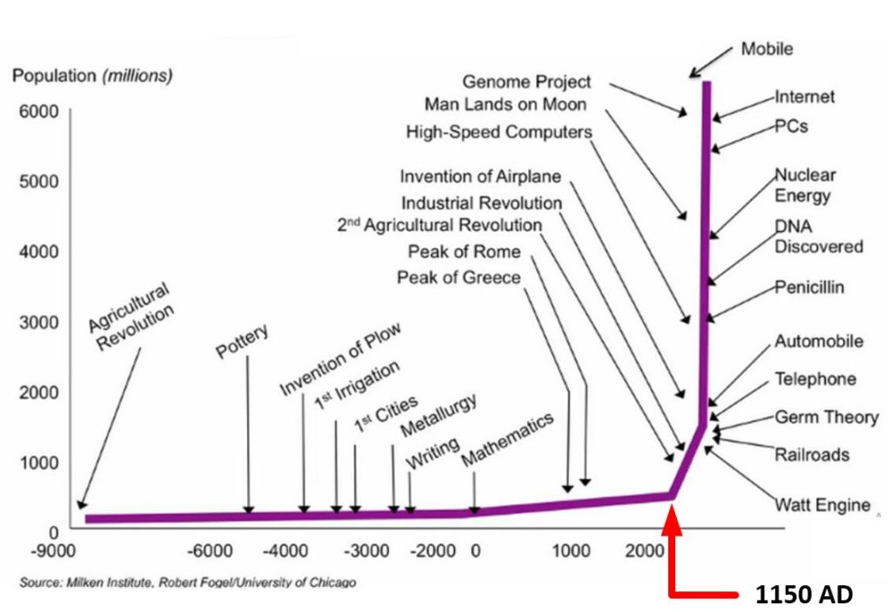

I have presented the PDF titled “Alien Interview” to the readership. It is supposed to be the transcripts of the interview that a nurse had with an extraterrestrial entity that was recovered from a spaceship crash in Roswell, New Mexico. There is a lot of good stuff there, and a lot of things that run counter to what I know and understand to be true. My intention here is to parse the entire book, and compare it to what I know. Where the two diverge, it will be up to you (the readership) to sort it out.
This is part 3.
Document appears to be genuine
And I can tell you all that the more that I parse this document, the clearer it is (to me) that it is genuine.It is exactly what it says it is. And the extraterrestrial is actually telling the truth, so far.
Errors
However, there are errors in translation, and confusion in the interpretation of what is being stated. Anything concerning “time” and the translation of dates are all wrong.
Humans think of time as “shared” and “linear”.
The type-1 greys think of time as circular and repeating. As in, consciousness enters and exits different world lines” and if you graph that movement of consciousness you will see a “corkscrew” movement through the MWI. Which is what it was referring to. All of which was WAY beyond the concepts of anyone in Roswell at that time.
Therefore all dates and time, and anything associated with these characteristics are in error, and can be ignored.
This document predates MAJestic
Also take note that this document pre-dates MAJestic, and it is crystal clear to me now, that my role was, and still is, in the rehabilitation aspects of moving the Earth from a Hellish “Prison Planet” to that of a “sentience nursery”.
This document has (for me, personally) helped to clarify elements and aspects of my role that were “blurred” and obscured from me. To that I am eternally grateful.
Look at the dates on my articles, and look at what I covered. You will see that they match up nearly perfectly with this “Alien Interview” transcript. And this is the first time that I have ever heard of this document. The timing was transcendental.
This is part three of the parsing of this document
You can view part 1 HERE.
SUBJECT: ALIEN INTERVIEW, 26. 7. 1947, 1st Session
“The Domain Expeditionary Force has observed a resurgence in science and culture of the Western world since 1150 AD when the remaining remnants of the space fleet of the “Old Empire” in this solar system were destroyed.
No problem with this.
The influence of the remote control hypnosis operation diminished slightly after that time, but still remains largely in force.
By removing the local leadership, the impact on the "electromagnetic force projection field" wasn't really affected. It still remained in place as of 1948. Therefore, there must have been other systems, facilities, bases, and operations scattered in and around the Earth that were still functional.
Apparently a small amount of damage was done to the “Old Empire” remote mind control operation which resulted in a small decrease in the power of this mechanism.
This offered a clue as to the techniques and methodologies involved, but at the time of the interview little else was understood.
As a result, some memory of technologies that IS-BEs already knew before they came to Earth started to be remembered.
It appears to me that the methodology seemed to be stratified. And by taking out the leadership, a great deal of the suppression system disappeared.
Thereafter the oppression of knowledge that is called the “Dark Ages” in Europe began to diminish after that time.

Since then knowledge of the basic laws of physics and electricity have revolutionized Earth culture virtually overnight.
No problem with this.
The ability to remember technology by many of the geniuses in the IS-BE population of Earth was partially restored, when not so actively suppressed as it was before 1150 AD. Sir Isaac Newton, is one of the best examples of this. In only a few decades he single-handedly reinvented several major and fundamental scientific and mathematical disciplines.
The men who “remembered” these sciences already knew them before they were sent to Earth.
No problem with this.
Ordinarily, no one would ever observe or discover as much about science and mathematics in a single life-time, or even in a few hundred life-times. These subjects have taken civilizations billions and billions of years to create!
No problem with this. Genius level skills and abilities point to much deeper understandings and connections. Much the same way that I discuss world-line travel int he MWI. I did not "invent" it. It's knowledge that lies all around us, it's just that the suppression field keeps this knowledge from us.
IS-BEs on Earth have only just begun to remember small fragments of all the technologies that exist throughout the universe. Theoretically, if the amnesia mechanisms being used against Earth could be broken entirely, IS-BEs would regain all of their memory!
We can only hope! But it will take time, and it cannot happen too quickly, as the result would be catastrophic. So things need to be nurtured into place.
Unfortunately, similar advances have not been seen in the humanities as the IS-BEs of Earth continue to behave very badly toward each other.
I have no problem with this statement.
This behavior, however, is heavily influenced by the “hypnotic commands” given to each IS-BE between lifetimes.
I have no problem with this. The pre-birth world-line template is what he is talking about. Though in different terms, adjusted to the mindset of Roswell military leadership in 1948. Specifically, he is referring the the consciousness components that are established and associated with the pre-birth world-line template.
And, the very unusual combination of “inmates” on Earth – criminals, perverts, artists, revolutionaries and geniuses – is the cause of a very restive and tumultuous environment.
No problem with this.
The purpose of the prison planet is to keep IS-BEs on Earth, forever.
I have no problem with this.
Promoting ignorance, superstition, and war between IS-BEs helps to keep the prison population crippled and trapped behind “the wall” of electronic force screens.
I have no problem with this.
IS-BEs have been dumped on Earth from all over the galaxy, adjoining galaxies, and from planetary systems all over the “Old Empire”, like Sirius, Aldebaran, the Pleiades, Orion, Draconis, and countless others.
I am sure that he is referring to star names that the pitiful astronomic knowledge of the Roswell military leadership would recognize. In truth, most civilizations are around much cooler, older, and stable stars. Not the short lived, blazing, and highly transitory stars that he specifically named.
There are IS-BEs on Earth from unnamed races, civilizations, cultural backgrounds, and planetary environments. Each of the various IS-BE populations have their own languages, belief systems, moral values, religious beliefs, training and unknown and untold histories.
I have no problem with this.
These IS-BEs are mixed together with earlier inhabitants of Earth who came from another star system more than 400,000 years ago to establish the civilizations of Atlanta and Lemuria.
Do not get too caught up in the conventional narratives about "Atlantis" and "Lemuria". That is sure as Hell a route to send you all down into a black hole that you will have a difficult time extracting yourself from. All evidence, all over the world, points to tool making humanoids around 400,000 years ago. This predates the normally accepted histories of the rise and evolution of man. The sudden appearance of these humanoid civilizations at 400,000 BCE is clearly indicative of transplanted civilizations. The size, magnitude and locations of their communities are (as of now) lost in time. Do not get too worked up about the details. Just realize the most basic history.
Those civilizations vanished beneath the tidal waves caused by a planetary “polar shift”, many thousands of years before the current “prison” population started to arrive.
Important points here. Humanoid colonies were established on the Earth. These eventually were destroyed or collapsed by natural events. Following that destruction was the rise of native proto-humans. It was during that period came the creation of the Earth as "Prison Planet" as part of the "Old Empire".
Apparently, the IS-BEs from those star systems were the source of the original, oriental races of Earth, beginning in Australia.
The "oriental races", such as the Chinese, the Japanese, the Koreans, and the Indians were all descended from the pre-deluge colonies.
On the other hand, the civilizations set up on Earth by the “Old Empire” prison system were very different from the civilization of the “Old Empire” itself.
I have no problem with this statement.
Which is an electronic space opera, atomic powered conglomeration of earlier civilizations that were conquered with nuclear weapons and colonized by IS-BEs from another galaxy.
The civilizations set up on Earth differed from the "Old Empire". They are "artificial" and retarded societies. This was intentional. The idea (I am sure) was to create a place of perpetual hardship and torture. A place where everyone was constantly fighting, where starvation, and hardship was normal.
The bureaucracy that controlled the former “Old Empire” was from an ancient space opera society, run by a totalitarian confederation of planetary governments, regulated by a brutal social, economic, and political hierarchy, with a royal monarch as its figurehead.
It appears to me that this is exactly the kinds of societies that have been setup throughout human history, with the most advanced and strongest manifestations being the current United States, and Western Europe. Were I to be an administrator of the "Old Empire" that was in charge of this Earth "Prison Plant", and realized that "The Domain" has invaded and taken control, I would flee. But where to? It seems to me that the most likely location would be on Earth itself and to occupy the bodies of the ruling classes. There I could live a life as I have become accustomed to living.
This type of government emerges with regularity on planets where the citizens abandon personal responsibility for autonomous, self-regulation.
I have no problem with this statement.
They frequently lose their freedom to demented IS-BEs who suffer from an overwhelming paranoia that every other IS-BE is their enemy who must be controlled or destroyed.
I have no problem with this statement.
Their closest friends and allies, whom they espouse to love and cherish, are literally “loved to death” by them.
I have no problem with this statement.
Because such IS-BEs exist, The Domain has learned that freedom must be won and maintained through eternal vigilance and the ability to use defensive force to maintain it.
I have no problem with this statement. Additionally, I believe that the military leadership at Roswell, would have agreed with this comment as well.
As a result, The Domain has already conquered the governing planet of the “Old Empire”.
I was unaware about any of the information regarding the "Old Empire", but I do believe what is being stated.
The civilization of The Domain, although considerably younger and smaller in size, is already more powerful, better organized, and united by a egalitarian esprit de corps never known in the history of the “Old Empire”.
I have no problem with this, and I am sure that the Roswell military leadership would recognize this as well.
The recently despoiled German totalitarian state on Earth was similar to the “Old Empire”, but not nearly as brutal, and about ten thousand times less powerful.
This statement is directly directed to the Roswell military leadership.
Many of the IS-BEs on Earth are here because they are violently opposed to totalitarian government, or because they were so psychotically vicious that they could not be controlled by “Old Empire” government.
Which tends to be the case in most American prisons today.
Consequently, the population of Earth is disproportionately comprised of a very high percentage of such beings. The conflicting cultural and ethical moral codes of the IS-BEs on Earth is unusual in the extreme.
I have no problem with this statement.
The Domain conquest of the central “Old Empire” planets was fought with electronic cannon.
I think that many readers will not understand. They will probably think of some "new" type of weapon, or a weaponized ray gun based on Nikola Tesla technology. This is wrong. What he is actually talking about is a weapon that disrupts the consciousness+ in much the same way that the "electromagnetic force screen" disrupted the lives of the consciousnesses on Earth. This type of weapon would be very powerful against consciousness, but do little damage to physical structures.
The citizens of the planets forming the core of government for the “Old Empire” are a filthy, degraded, slave society of mindless, tax-paying workers, who practice cannibalism. Violent automotive race tracks and bloody, Roman circus type entertainments are their only amusements.
Pretty much sounds like America today.
Regardless of any reasonable justification we may have had for using atomic weapons to vanquish the planets of the “Old Empire”, The Domain is careful not to ruin the resources of those planets by using weapons of crude, radioactive force.
The Domain did not use massive weapons like we would associate with war. They used disruptive electromagnetically designed beam weapons that upset the consciousness stability in the physical realms.
The current U.S. civilization is beginning to mimic some of the trappings of that civilization, especially in the design of airplanes, automobiles, ships, trains, and telephones. Likewise, buildings in the cities of Earth are thought to be “modern” or “futuristic” if their design resembles the architecture of the “Old Empire”.
Yes. I believe this. And this statement was made in 1947.
The government of the “Old Empire”, before being supplanted by The Domain, was comprised of beings who possessed a very craven intelligence, very much like the Axis powers during your recent world war. Those beings manifested precisely the same behavior as the galactic government that exiled them to eternal imprisonment on Earth.
A bit confused wording. The ruling class of the "Old Empire" very much resembled Nazi Germany. And the Nazi Germans exhibited the same behaviors that the leadership of the "Old Empire" maintained. I can see this information resonating with the Roswell generals and leadership in 1947.
They were a gruesome reminder of the ageless maxim that an IS-BE will often manifest the treatment they have received from others. Kindness fosters kindness. Cruelty begets cruelty.
No problem with this.
One must be able and willing to use force, tempered with intelligence, to prevent harm to the innocent.
No problem with this.
However, extraordinary understanding, self-discipline and courage are required to effectively prevent brutality, without being overwhelmed by the malice that motivated the brutality.
It takes a special kind of sentience to rise above the brutality that you suffered through. Not necessarily to find and giver forgiveness, but to prevent it from ever happening again.
Only a demonic, self-serving government would employ a “logic” or “science” to conceive that an “ultimate solution” to any problem is to murder and permanently erase the memory of every artist, genius, skilled manager, and inventor, and cast them into a planetary prison together with political opponents, killers, thieves, perverts, and disabled beings of an entire galaxy!
"Tell me about it." Oh how well I know this! If you have any doubts about my experience on this, read about how I was "retired" from MAJestic.
Once the IS-BEs expelled from the “Old Empire” arrived on Earth, they were given amnesia, and hypnotically tricked into thinking that something else had happened to them.
It discusses the process. I have no problem with this.
The next step was to implant the IS-BEs into biological bodies on Earth. The bodies became the human populations of “false civilizations” which were designed and installed in the minds of IS-BEs to look completely unlike the “Old Empire”.
I have no problem with this. It's a logical extension.
All of the IS-BEs of India, Egypt, Babylon, Greece, Rome, and Medieval Europe were guided to pattern and build the cultural elements of these societies based on standard patterns developed by the IS-BEs of many earlier, similar civilizations on “Sun Type 12, Class 7” planets that have existed for trillions of years throughout the universe.
I have no problems with this. The civilization archetypes are quite standard.
In the earliest times the IS-BEs sent to prison Earth lived in India.
When Earth was used as a "Prison Planet", the very first convicts were sent to ancient India. At that time, my guess is that this was the most populated, or densely populated area on the Earth. Certainly not like it is today, but more populated than say Africa, or Europe.
They gradually spread into Mesopotamia, Egypt, Mesoamerica, Achaea, Greece, Rome, Medieval Europe, and to the New World.
It stated that the migration and expansion of the prison population moved Westward not East. Eventually moving into the Mediterranean Sea, and associated civilizations there. Into Europe, and then into the Americas.
They did not move into the East, as these areas had descendants of prior civilizations (Atlantis and Lemuria) which maintained the Asian genetic code.
They were hypnotically “commanded” to follow the pattern of a given civilization by the “Old Empire” prison operators.
This would be pre-structuring, or "front-loading" the pre-birth world-line template by consciousness component attributes.
This is an effective mechanism to disguise the actual time and location from the IS-BEs imprisoned on Earth. The languages, costumes and culture of each false civilization are intended to reinforce amnesia because they do not remind the IS-BEs on Earth of the original “Old Empire” planets from which they were deported.
This make sense. You remove anything that might trigger a memory. You make everything, new, different and contentious.
On the very far back-track of time these types of civilizations tended to repeat themselves over and over because the IS-BEs who created them become familiar with certain patterns and styles, and stayed with them.
I have no problem with this.
It is a lot of work to invent an entire civilization, complete with culture, architecture, language, customs, mathematics, moral values, and so forth. It is much easier to replicate a copy based on a familiar and successful pattern.
I have no problem with this.
A “Sun Type 12, Class 7” planet is the designation given to a planet inhabited by carbon-oxygen based life forms.
This is in 1947. Long, long before the television series "Star Trek". No one ever thought like this back then. Not even in the wildest dreams of the scientists of the day, no one ever thought like this.
The class of the planet is based on the size and radiation intensity of the star, the distance of the planetary orbit from the star, and the size, density, gravity, and chemical composition of the planet. Likewise, flora and fauna are designated and identified according to the star type and class of planet they inhabit.
I have no problem with this.
On the average, the percentage of planets in the physical universe with a breathable atmosphere is relatively small.
I have no problem with this. While life abounds in the universe, the idea that there are lifeforms identical to what we have on the Earth isn't as common as we would hope for.
Most planets do not have an atmosphere upon which life-forms “feed”, as on Earth, where the chemical composition of the atmosphere provides nutrition to plants, and other organisms, which in turn support other life forms.
I have no problem with this. Though, when it was addressing the Roswell leadership it was speaking in terms that they could understand, such as human-like creatures and intelligence's. Today, we would widen up the scope a bit, and include all types of microbes and other bacterial forms.
When the Domain Force brought the Vedic Hymns to the Himalayas region 8,200 years ago, some human societies already existed. The Aryan people invaded and conquered India, bringing the Vedic Hymns to the area.
What was discussed by the Type-1 extraterrestrial in 1947 is common knowledge today.
The Vedas were learned by them, memorized and carried forward verbally for 7,000 years before being committed to written form.
During that span of time one of the officers of The Domain Expeditionary Force was incarnated on Earth as “Vishnu”. He is described many times in the Rig-Veda. He is still considered to be a god by the Hindus.
Vishnu fought in the religious wars against the “Old Empire” forces. He is a very able and aggressive IS-BE as well as a highly effective officer, who has since been reassigned to other duties in The Domain.
This Domain officer inhabited a human body and was involved in the teaching and changing the conditions of the human civilization at that time. It was never erased, and never sentenced to the "Prison Planet" and is now performing other duties within the Domain.
This entire episode was orchestrated as an attack and revolt against the Egyptian pantheon installed by “Old Empire” administrators.
The type-1 greys planned and orchestrated this and other series of battles and Geo-political posturings to help break the grip of the "electro-magnetic force screen" that had so completely incarcerated them.
The conflict was intended to help free humankind from implanted elements of the false civilization that focused attention on many “gods” and superstitious ritual worship demanded by the priests who “managed” them. It is all part of the mental manipulation by the “Old Empire” to hide their criminal actions against the IS-BEs on Earth.
I have no problem with this.
A priesthood, or prison guards, were used to help reinforce the idea that an individual, is only a biological body, and is not an Immortal Spiritual Being. The individual has no identity. The individuals have no past lives. The individual has no power. Only the gods have power. And, the gods are a contrivance of the priests who intercede between men and the gods they serve.
It's a power control mechanism,. I have no problem with this.
Men are slaves to the dictates of the priests who threaten eternal spiritual punishment if men do not obey them.
I have no problem with this. This is a theme that has been repeated over, and over, and over again. From the Americas, to Europe, to Egypt, to Rome, to today inside of America, and televangelists.
What else would one expect on a prison planet where all prisoners have amnesia, and the priests themselves are prisoners?
I have no problem with this.
The intervention of The Domain Force on Earth has not been entirely successful due to the secret mind-control operation of the “Old Empire” that still continues to operate.
As of 1947, the Dominion has not been all that successful erasing the programming and changing the destructive paths that mankind was set upon.
A battle was waged between the “Old Empire” forces and The Domain through religious conquest.
The attempts to change the planetary system began around 8,000 BCE, and wasn't really all that successful.
Between 1500 BCE and about 1200 BCE, The Domain Forces attempted to teach the concept of an individual, Immortal Spiritual Being to several influential beings on Earth.
A new avenue, or methodology was attempted during a 300 year span of time. It started around 1500 BCE.
One such instance resulted in a very tragic misunderstanding, misinterpretation and misapplication of the concept. The idea was perverted and applied to mean that there is only one IS-BE, instead of the truth that everyone is an IS-BE! Obviously, this was a gross incomprehension and an utter unwillingness to take responsibility for one’s own power.
What a fiasco!
The “Old Empire” priests managed to corrupt the concept of individual immortality into the idea that there is only one, all-powerful IS-BE, and that no one else is or is allowed to be an IS-BE. Obviously, this is the work of the “Old Empire” amnesia operation.
I have no problem with this statement.
It is easy to teach this altered notion to beings who do not want to be responsible for their own lives. Slaves are such beings. As long as one chooses to assign responsibility for creation, existence and personal accountability for one’s own thoughts and actions to others, one is a slave.
Which is a major issue going on inside the United States today.
As a result, the concept of a single monotheistic “god” resulted and was promoted by many self-proclaimed prophets, such as the Jewish slave leader – Moses -who grew up in the household of the Pharaoh Amenhotep III and his son, Akhenaten and his wife Nefertiti, as well as his son Tutankhamen.
I am not well versed in the lineages of Ancient Egypt. However, I can see how this could take place.
The attempt to teach certain beings on Earth the truth that they are, themselves, IS-BEs, was part of a plan to overthrow the fictional, metaphorical, anthropomorphic panoply of gods created by the “Old Empire” mystery cult called “The Brothers of The Serpent” known in Egypt as the Priests of Amun.
News to me, but I can see it happening.
They were a very ancient, secret society within the “Old Empire”.
I have no problem with this statement.
The Pharaoh Akhenaten was not a very intelligent being, and was heavily influenced by his personal ambition for self-glorification. He altered the concept of the individual spiritual being and embodied the concept in the sun god, Aten. His pitiful existence was soon ended. He was assassinated by Maya and Parennefer, two of the Priests of Amun, or “Amen”, which the Christians still say, who represented the interests of the “Old Empire” forces.
I am not well versed in Ancient Egyptian history, but this does make sense and could very well have happened.
The idea of “One God” was perpetuated by the Hebrew leader Moses while he was in Egypt. He left Egypt with his adopted people, the Jewish slaves. While they were crossing the desert, Moses was intercepted by an operative of the “Old Empire” near Mt. Sinai. Moses was tricked into believing that this operative was “the” One God through the use of hypnotic commands, as well as technical and aesthetic tricks which are commonly used by the “Old Empire” to trap IS-BEs.
I have no problem with this statement.
Thereafter, the Jewish slaves, who trusted the word of Moses implicitly, have worshiped a single god they call “Yaweh“.
I have no problem with this statement.
The name “Yaweh” means “anonymous”, as the IS-BE who “worked with” Moses could not use an actual name or anything that would identify himself, or blow the cover of the amnesia/prison operation. The last thing the covert amnesia/hypnosis/prison system wants to do is to reveal themselves openly to the IS-BEs on Earth. They feel that this would restore the inmates memories!
I have no problem with this statement.
This is the reason that all traces of physical encounters between operatives of space civilizations and humans is very carefully hidden, disguised, covered-up, denied or misdirected.
I have no problem with this statement.
This “Old Empire” operative contacted Moses on a desert mountain top and delivered the “Ten Hypnotic Commands” to him. These commands are very forcefully worded, and compel an IS-BE into utter subservience to the will of the operator. These hypnotic commands are still in effect and influence the thought patterns of millions of IS-BEs thousands of years later!
So, and if you read this exactly as written. It states that any of the ten commandments trigger hypnotic commands. And thus are used by the "Old Empire" to influence the will of the people who thus believe them. Petty powerful, and yes, even dangerous stuff. Is it true or not? I do not know.
Incidentally, we later discovered that the so-called “Yaweh” also wrote, programmed and encoded the text of the Torah, which when it is read literally, or in its decoded, form, will provide a great deal more false information to those who read it.
The type-1 extraterrestrial is saying that all of the major religions at that time spouted writings which were trigger hypnotic commands, and thus influenced all the people who read or listened to them.
Ultimately, the Vedic Hymns became the source of nearly all of Eastern the religions and were the philosophical source of the ideas common to Buddha, Laozi, Zoroaster , and other philosophers.
So it spread throughout the world...
The civilizing influences of these philosophies eventually replaced the brutal idolatry of the “Old Empire” religions and were the true genesis of kindness and compassion.
You asked me earlier why The Domain, and other space civilizations do not land on Earth or make their presence known. Land on Earth? Do you think we are crazy or want to be crazy?
Obviously, it knew very well how to respond to the questions poised by the Roswell military leadership.
It takes a very brave IS-BE to come down through the atmosphere and land on Earth, because this is a prison planet, with a very uncontrolled, psychotic population.
Well stated, and factually correct.
And, no IS-BE is entirely proof against the risk of entrapment, as with the members of The Domain Expeditionary Force who were captured in the Himalayas 8,200 years ago.
As powerful as the type-1 greys of the Dominion are, they can be hurt and harmed. And they need to be very cautious when they are in dangerous situations and dangerous people.
No one knows what IS-BEs on Earth are going to do.
I think that is is a very accurate statement.
We are not scheduled to invest the resources of The Domain to take total control of all the space surrounding the area at this time.
This should be well understood.
This will occur in the not-to-distant future – about 5,000 Earth years – according to the time schedule of The Domain.
I believe that this time-line has sped up substantially with the formation of MAJestic, and with people such as MM, and Sebastian providing "boots on the ground" and performing various "anchoring" activities.
At this time we do not prevent transports from other planetary systems or galaxies from continuing to drop IS-BEs into the amnesia force screen area.
A couple of points here. [1] In 1947, the Domain did not prevent interstellar "drop offs". I do know that that policy changed when I was active in MAJestic. [2] The "amnesia force screen area" is a specific region. It is not infinite. It has geographic boundaries, and limits.
Eventually, this will change.
In addition, Earth, inherently, is a highly unstable planet. It is not suitable for settlement or permanent habitation for any sustainable civilization. This is part of the reason why it is being used as a prison planet.
This is a serious point that no one, in any analysis that I have read really understands. Contrary to the other statements about O, B and A stars, (Those were proximity locations for civilization anchors, not the homes of specific species themselves) most civilizations prefer the cooler, longer life, K, M and drown dwarfs for civilization stability. The next point(s) are all very important and you all should read them, and pay attention to them.
No one else would seriously consider living here for a variety of simple and compelling reasons:
- The continental land masses of Earth are floating on a sea of molten lava beneath the surface which causes the land masses to crack, crumble and drift continually.
- Because of the liquid nature of the core, the planet is largely volcanic and subject to earthquakes and volcanic explosions.
- The magnetic poles of the planet shift radically about once every 20, 000 years. This causes a greater or lesser degree of devastation as a result of tidal waves, and climatic changes.
This was written long before "Worlds in Collision".
- Earth is very distant from the center of the galaxy and from any other significant galactic civilization. This isolation makes it unsuitable for use, except as a “pit stop” or jumping off point along the way between galaxies. The moon and asteroids are far more suitable for this purpose because they do not have any significant gravity.
Our solar system is in a relatively "rural area" in our galaxy. Though, the center of our galaxy is rather dangerous for us humans, it isn't for other species that have adapted to that environment.
- Earth is a heavy gravity planet, with heavy metallic soil and a dense atmosphere. This makes it treacherous for navigational purposes. That fact that I am in this room, as the result of an in flight accident, in spite of the technology of my craft and my extensive expertise as a pilot, are proof of these facts.
- There are approximately sixty billion Earth-like (Sun Type 12, Class 7) planets in the Milky Way galaxy alone, not to mention the vast expanses of The Domain, and the territories we will claim in the future. It is difficult to stretch our resources to do much more than a periodic reconnaissance of Earth. Especially when there are no immediate advantages to invest resources here.
- On Earth most beings are not aware that they are IS-BEs, or that there are spirits of any kind. Many other beings are aware of this, but nearly everyone has a very limited understanding of themselves as an IS-BE.
One of the reasons for this is that IS-BEs have been waging war against each other since the beginning of time.
I have no problem with this.
The purpose of these wars have always been to establish domination by one IS-BE or group of IS-BEs over another. Since an IS-BE cannot be “killed”, the objective has been to capture and immobilize IS-BEs. This has been done in an nearly unlimited variety of ways. The most basic method to capture and immobilize an IS-BE is through the use of various kinds of “traps”.
I prefer the use of the term "snare" instead. But I am sure that the point was made in the communication narrative.
IS-BE traps have been made and put in place by many invading societies, such as the one that established the “Old Empire”, beginning about sixty-four trillion years ago.
Again, ignore the dates and time. They are wholly messed up and incomprehensible to the translator and the Roswell military leadership audience.
Traps are often set up in the “territory” of the IS-BEs being attacked. Usually a trap is set with the electronic wave of “beauty” to attract the interest and attention of the IS-BE. When the IS-BE moves toward the source of the aesthetic wave, such as a beautiful building or beautiful music, the trap is activated by the energy put out by the IS-BE.
A trap or snare of beauty, or attractiveness. Yikes!
One of the most common trap mechanism uses the IS-BE’s own thought energy output when the IS-BE tries to attack or fight back against the trap. The trap is activated and energized by the IS-BE’s own thought energy. The harder the IS-BE fights against the trap, the more it pulls the IBS toward it and keeps them “stuck” in the trap.
It's like trying to stop smoking, by just smoking the last pack instead of throwing it away.
Throughout the entire history of this physical universe, vast areas of space have been taken over and colonized by IS-BE societies who invade and take over new areas of space in this fashion.
Not just the "Old Empire", but many others. The universe has a history of consciousness dominance.
In the past, these invasions have always shared common elements:
- the overwhelming use of force of arms, usually with nuclear or electronic weapons.
- mind control of the IS-BEs in the invaded area through the use of electroshock, drugs, hypnosis, erasure of memory and the implantation of false memory or false information intended to subjugate and enslave the local IS-BE population.
- take over of natural resources by the invading IS-BEs.
- political, economic and social slavery of the local population.
These activities continue in present time.
I have no problem with these statements.
All of the IS-BEs on Earth have been members of one or more of these activities in the past, both as an invader, or as part of the population being invaded. There are no “saints” in this universe. Very few have avoided or been exempted from warfare between IS-BEs.
I have no problem with these statements.
IS-BEs on Earth are still the victims of this activity at this very moment. The between-lives amnesia administered to IS-BEs is one on the mechanisms of an elaborate system of “Old Empire” IS-BE traps, that prevent an IS-BE from escaping.
I have no problem with these statements.
This operation is managed by an illicit, renegade secret police force of the “Old Empire”, using false provocation operations to disguise their activities in order to prevent detection by their own government, The Domain and by the victims of their activities.
All this is news to me, but it does explain the fear and concern that the Type-1 grey has when dealing with humans. I can tell you that things have improved significantly once MAJestic became involved. And movement with the type-1 greys and other species proceeded unhindered and unmolested.
They are mind-control methods developed by government psychiatrists.
Of course. I have no problem with this statement.
Earth is a “ghetto” planet. It is the result of an intergalactic “Holocaust”.
This is news to me, but I can see it happening by a very big, very corrupt and very powerful "Old Empire".
IS-BEs have been sentenced to Earth either because:
- They are too viciously insane or perverse to function as part of any civilization, no matter how degraded or corrupt.
- Or, they are a revolutionary threat to the social, economic and political caste system that has been so carefully built and brutally enforced in the “Old Empire”. Biological bodies are specifically designed and designated as the lowest order of entity in the “Old Empire” caste system. When an IS-BE is sent to Earth, and then tricked or coerced into operating in a biological body, they are actually in a prison, inside a prison.
- In an effort to permanently and irreversibly rid the “Old Empire” of such “untouchables”, the eternal identity, memory, and abilities of every IS-BE is forcefully erased. This “final solution” was conceived and carried out by the psychopathic criminals who are controlled by the “Old Empire”.
I have no problem with these statements.
The mass extermination of “untouchables” and prison camps created by Germany during World War II were recently revealed. Likewise, the IS-BEs of Earth are the victims of spiritual eradication and eternal slavery inside frail, biological bodies, inspired by the same kind of craven hatred in the “Old Empire”.
I have no problem with these statements.
The kind and creative inmates of Earth are continuously tortured by butchers and lunatics who are controlled by the “Old Empire” prison operators. The so-called “civilizations” of Earth, from the age of useless pyramids to the age of nuclear holocaust, have been a colossal waste of natural resources, a perverted use of intelligence, and an overt oppression of the spiritual essence of every single IS-BE on the planet.
I have no problem with these statements.
If The Domain sent ships to every corner of the universe in search of “Hell”, their quest could end on Earth. What greater brutality can be inflicted on anyone than to erase the spiritual awareness, identity, ability, and memory that is the essence of oneself?
I have no problem with these statements.
The Domain has, as yet, been unable to rescue the 3,000 IS-BEs of the Expeditionary Force Battalion either. They are forced to inhabit biological bodies on Earth. We have been able to recognize and track most of them for the past 8,000 years. However, our attempts to communicate with them are usually futile, as they are unable to remember their true identity.
I have no problem with these statements. However, I do know that there is a program with "abductees" who are taken to type-1 grey facilities and undergo biological monitoring, cleansing techniques, and other procedures designed to rehabilitate them. MAJestic members (such as myself) participate in various ways. Sometimes assisting, sometimes providing <redacted> and sometimes being part of the procedure ourselves. I myself have taken part in these rehabilitation procedures, and I even wrote up about one. I think I wrote about it last year or so. Wouldn't it truly be something if I was one of the lost legion! Anyways, all this stuff about "abductions" are misinterpretations of important efforts made to take care of the consciousnesses+ that inhabit this Earth wide region.
The majority of lost members of The Domain force have followed the general progression of Western civilization from India, into the Middle East, then to Chaldea, and Babylon, into Egypt, through Achaia, Greece, Rome, into Europe, to the Western Hemisphere, and then all around the world.
I can tell you that all MAJestic members must be of service-to-others sentience, and that is the sentience that all of the Type-1 greys that I have encountered possessed. I cannot help but to believe that any members of the lost members of the Domain would also possess this sentience.
The members of the lost Battalion and many other IS-BEs on Earth, could be valuable citizens of The Domain, not including those who are vicious criminals or perverts. Unfortunately, there has been no workable method conceived to emancipate the IS-BEs from Earth.
As of 1947. I believe that this situation has changed somewhat. I can tell you that <redacted>.
Therefore, as a matter of common logic, as well as the official policy of The Domain, it is safer and more sensible to avoid contact with the IS-BE population of Earth until such time as the proper resources can be allocated to locate and destroy the “Old Empire” force screen and amnesia machinery and develop a therapy to restore the memory of an IS-BE.”
I agree with this, and I personally believe that this situation changed one year later when MAJestic was formed. And that substantial strides and changes were made and implemented throughout the 1980's and 1990's up until my retirement as well as the mass retirement of everyone within my cluster of cells.
End of part 3
Sure, there are miss-translations on time, confusions in regard to galaxies and universes, and a mish-mash of confusion between consciousness+, humans, and some confusion regarding galactic “ownership” and “power projection” between different species, however this is the real deal. It fits in perfectly with everything that I know about MAJestic.
The more I parse it in detail, the clearer to me that this is exactly what it is claimed to be.
I will admit that I was unaware of the “Old Empire”, and the role that the Earth had as a “prison planet” for it. I am also unaware of the details regarding it.
But as I compare what I know, and what I have experienced with what I have parsed, I have been able to “open doors” so to speak, and suddenly mysteries that I have been part of have now been explained. I can tell you that this document has really been a real benefit to me personally. I have seen and read many, many, MANY faked bullshit nonsense on the internet. But folks, this is the real deal. It has been able to unlock some things that only I know, and open them and suddenly all sorts of puzzle pieces that I have participated in, like <redacted> and the time that <redacted> with the particular <redacted> explains the ancient <redacted> and the especial oddity that I encountered when dealing with the Oxia Palus <redacted>.
I well remember an event that I had regarding a world-line slide, and it really was a mystery to me. Most of the time, I would just brush them off as just odd things that I had to endure, but on one occasion it seemed to me that they all fit together, and when <redacted> which brought me to the understanding of the anchoring process for world-line groupings, and at this time the <redacted> along with a type-1 grey were involved in <redacted> and it clearly showed to me that there MUST have been a previous or prior Empire or federation” of some sort, or of some type that were involved in <redacted> to such an extent. All requiring some kind of “work around” to accomplish specific goals and changes. Now I know.
The solution to the reversal of the amnesia was tied to the “world-line” anchoring that I have been so painfully involved in these last three decades. And with that, and the understanding that the <redacted> of the various attributes <redacted> fit in the consciousness <redacted> collaboration <redacted> reconfiguration by region, time, and <redacted>.
I just cannot express myself in any way that you can understand. Guys! This is the missing cypher.
Please do NOT read the document without reading my parsing. I think my parsing will help you all move foreword with this.
Key Points
Never the less, I believe the following to be true in regards to this parsing of this section of the book…
- Everything here is true.
- Earth is no longer a “prison planet”
- Earth is now a “sentience nursery”.
- Fear not an “abduction”. It’s actually a good thing. Not a bad thing.
- Type-1 greys of “the Domain” are service-for-others sentience.
- MAJestic is changing everything, hand in hand with the Type-1 greys.
Part four
You can visit part four HERE.